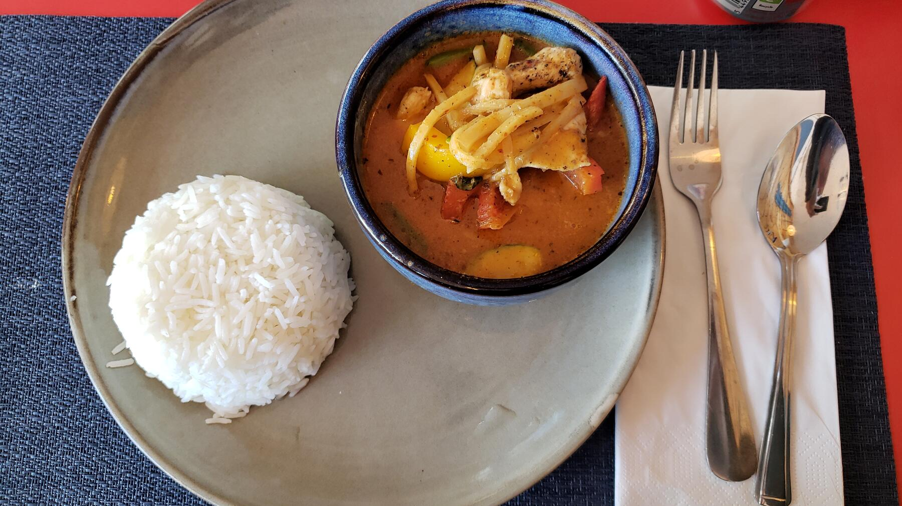

Zurück zur Übersicht
Thai-Curry mit Huhn, Paprika und Erdnussnote
Rotes Kokos-Curry mit mariniertem Hähnchen, Paprika, Bambussprossen und Maiskölbchen, abgerundet mit Erdnussbutter.
- Zeit
- 55 Min.
- Schwierigkeit
- leicht
- Kategorie
- Asiatisch
- Ernährung
- mit Fleisch
Zutaten
Portionen
- 500 gHähnchenbrustfilet, in feinen Streifen
- 2 ELPflanzenöl
- 1 ELSojasauce
- 1 StückIngwer, etwa daumengroß, geschält und fein gehackt
- 1 ELRote Thai-Currypaste (oder weniger)
- 1 ELErdnussbutter
- 400 mlUngesüßte cremige Kokosmilch
- 2rote Paprikaschoten, in feinen Streifen
- 3Frühlingszwiebeln, in feinen Streifen
- 1 GlasBambussprossen, klein (ca. 175 g), abgetropft, in Streifen
- 10Maiskölbchen aus dem Glas, längs halbiert
- 1 ELFischsauce
- 1 TLPalmzucker oder brauner Zucker
- 1 TLZitronengraspaste oder fein gehacktes Zitronengras
- 1 ELThai-Basilikum
- 500 gJasmin- oder Duftreis
Zubereitung
- Das Fleisch mit je 1 EL Öl, Sojasauce und dem Ingwer vermischen und etwa 30 Minuten marinieren. Inzwischen das Gemüse putzen und klein schneiden.
- Das Fleisch in einer beschichteten Pfanne rasch anbraten und beiseitestellen.
- Im Wok oder einer großen Pfanne mit hohem Rand die Currypaste im restlichen Öl anrösten. Erdnussbutter unterrühren und schmelzen lassen. Mit Kokosmilch ablöschen, das Gemüse zugeben und alles etwa 15 Minuten köcheln lassen.
- In der Zwischenzeit den Reis nach Packungsangabe zubereiten.
- Kurz vor Ende der Garzeit das Fleisch dazugeben und kurz erhitzen. Das Gemüse soll noch Biss haben.
- Mit Palmzucker, Fischsauce (notfalls etwas Salz) und Zitronengraspaste abschmecken, die Paste nicht mitkochen. Nach Belieben mit Thai-Basilikum bestreuen und mit dem Reis servieren.
Tipp: Das Gemüse lässt sich nach Geschmack variieren, zum Beispiel mit Wasserkastanien, Brokkoli oder Zuckerschoten. Insgesamt sollten es etwa 4–5 Handvoll sein. Angebrochene Zitronengraspaste hält sich am besten im Tiefkühlfach.